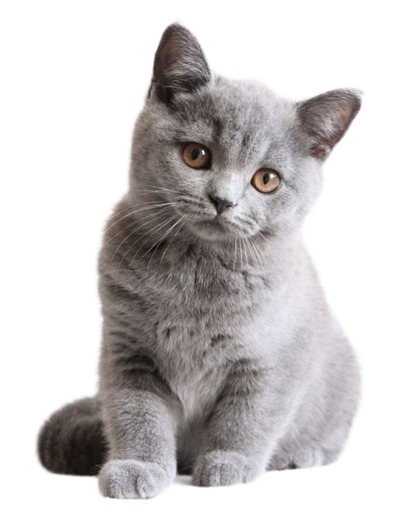
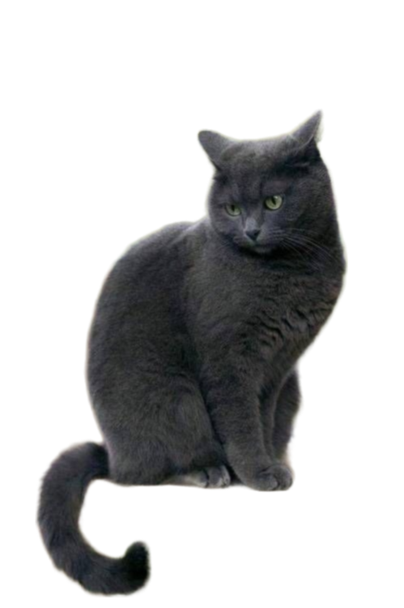

- อาหารคุณภาพดีและน้ำสะอาด
- การให้อาหารคุณภาพดีเป็นปัจจัยสำคัญในการเพิ่มอายุขัยเฉลี่ยแมว น้องแมวเป็นสัตว์กินเนื้อ ดังนั้นควรเลือกอาหารที่มีส่วนผสมหลักเป็นโปรตีนและมีสารอาหารจำเป็นต่อแมว เช่น ทอรีน นอกจากนี้อย่าลืมเตรียมน้ำสะอาดให้พวกเค้าตลอดเวลาด้วย
- การดูแลสุขภาพร่างกาย
- การพบสัตวแพทย์เป็นประจำ จะช่วยให้คุณมั่นใจได้ว่าเจ้าเหมียวสุขภาพดี ไม่มีปัญหาสุขภาพแอบแฝง โดยคุณหมอยังสามารถแนะนำเรื่องอาหารการกิน การควบคุมน้ำหนัก และการออกกำลังกายที่เหมาะสมกับเจ้าตัวน้อยของคุณได้ด้วย
- การป้องกันปรสิตตัวร้ายก็สำคัญ คุณหมออาจแนะนำให้ตรวจอุจจาระเพื่อหาหนอนพยาธิชนิดต่าง ๆ โดยคุณสามารถเก็บตัวอย่างอุจจาระได้ด้วยตัวเอง ก่อนนำไปให้คุณหมอเมื่อถึงเวลานัดหมาย วิธีนี้จะช่วยให้ประหยัดเวลา ไม่ต้องเดินทางบ่อย แถมเจ้าเหมียวก็แฮปปี้ด้วย
- นอกจากนี้คุณหมอจะจัดตารางการฉีดวัคซีนให้เจ้าตัวน้อยด้วย เพื่อป้องกันและเตรียมร่างกายให้พร้อมต่อสู้กับโรคร้ายต่าง ๆ เช่น โรคพิษสุนัข ทั้งนี้วัคซีนบางชนิดจำเป็นต้องฉีดกระตุ้นทุกปี ส่วนบางชนิดก็ทุก ๆ สามปี ดังนั้นควรไปพบคุณหมอตามนัดหมายทุกครั้ง!
- ความเอาใจใส่
- ไม่ใช่แค่อาหารหรือข้าวของที่จำเป็นเท่านั้นที่น้องแมวต้องการจากเรา พวกเค้าต้องการความรักความเอาใจใส่ด้วย แม้ว่าจะมีนิสัยรักอิสระ แต่บางเวลาเจ้าตัวน้อยเหล่านี้ก็ต้องการความสนใจ อย่าลืมแบ่งเวลามาเล่นหรือทำกิจกรรมกับพวกเค้าประมาณ 10 – 15 นาทีต่อวัน ไม่จำเป็นต้องหาซื้อของเล่นราคาแพง แค่ถุงเท้าที่สะอาดผูกเข้ากับเชือกก็สร้างความสนุกสนานให้เจ้าเหมียวได้มากแล้ว
- การออกกำลังกาย
- ชวนน้องแมวเล่นสนุกหรือทำกิจกรรมง่าย ๆ วันละ 30 นาที เพื่อให้มั่นใจว่าเจ้าตัวน้อยของคุณจะมีร่างกายแข็งแรง พร้อมอยู่ด้วยกันไปนาน ๆ
- ดูแลสุขภาพช่องปากและฟัน
- หากไม่แปรงฟันเป็นประจำจะทำให้เกิดคราบหินปูนสะสม ซึ่งอาจนำไปสู่ปัญหาสุขภาพที่ร้ายแรงอื่น ๆ ได้ เช่น ปวดฟัน ฟันหลุดร่วง หรือโรคไต จึงควรหมั่นทำความสะอาดฟันและพบสัตวแพทย์เพื่อตรวจเช็กสุขภาพฟันเป็นประจำ


|